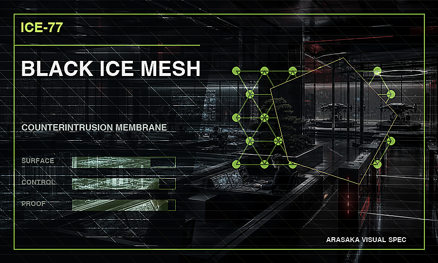
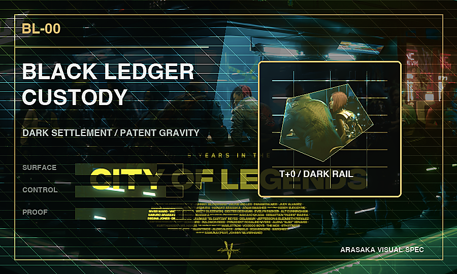
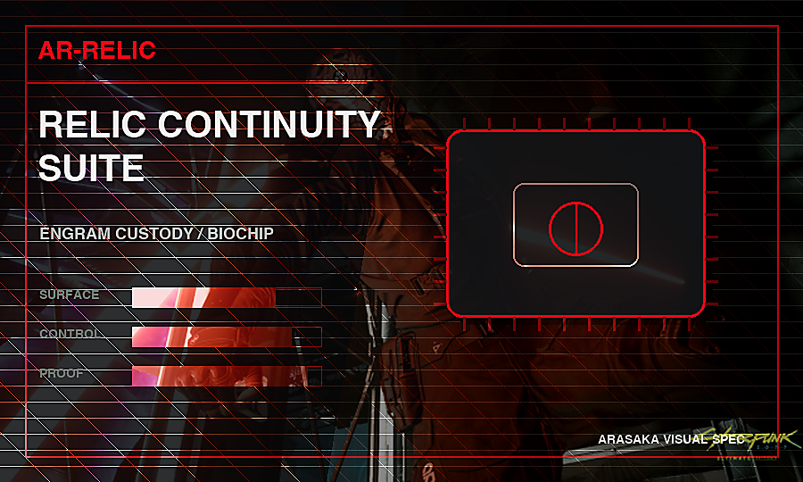
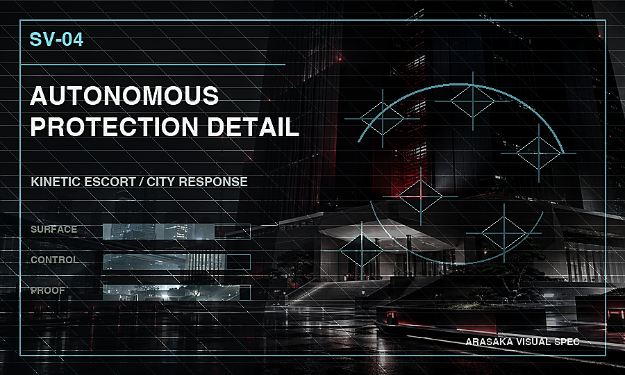

Minimum witness threshold before continuity, force, or capital systems can leave sealed review.
 荒坂株式会社
荒坂株式会社
Return to governance
ARASAKA GOVERNANCE DOCKET
BOARD / EXPORT / AUDIT
Stewardship measured in generations.
The Chairman's Office, Family Council, and Group Board govern long-term strategy, succession, sovereign relations, capital allocation, and controlled technology deployment.
Jurisdictional lanes bound to named license class, prohibited surface, and renewal window.
Annual evidence review covering authority, retention, escalation, disclosure, and termination.
Mandate Control
Deployments become legal objects before they become operational systems.
Every high-authority Arasaka engagement is converted into a board docket with sponsor review, export classification, escrow release logic, and post-launch audit obligations.
Board Docket
Sponsor review, activation motion, quorum state, capital escrow, and named accountability are reconciled before field delivery.
Open governed route
EX-77Export License
Black ICE, counterintrusion, and autonomous systems are bound to corridors, prohibited surfaces, and human escalation limits.
Open governed route
UB-03Underwriting Bond
Founder identity, patent collateral, blind settlement, and disclosure switches are priced before private capital moves.
Open governed route
RC-365Renewal Audit Covenant
Construct custody, memory retention, successor authority, and evidence survival are reviewed before the mandate renews.
Open governed route
RF-12Rules-of-Force Ledger
Autonomous posture changes, exclusion maps, officer seals, and replay artifacts are bound before force survives audit.
Open governed route
Authority Routing
The docket connects board approval to live command, archive evidence, and technical doctrine.
A mandate can enter through a service, product, incident file, or technical dossier. It does not activate until the same authority object exists across all four surfaces.